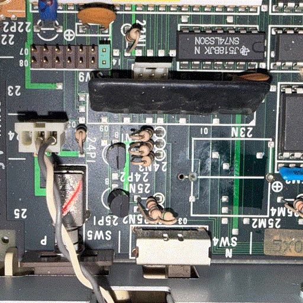
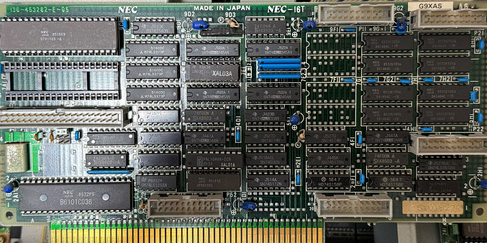
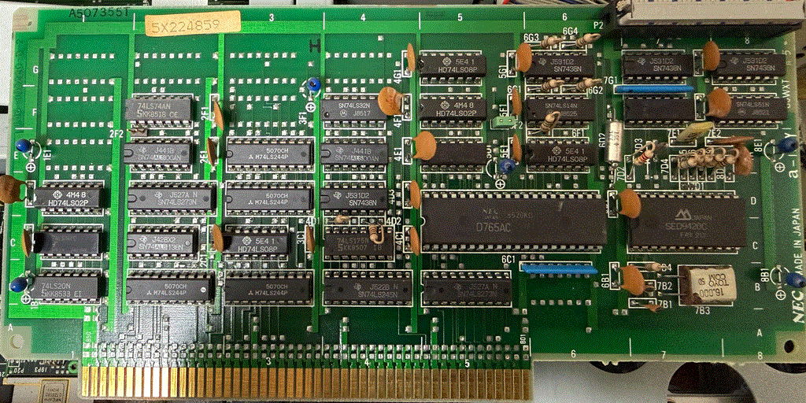

★電源 東北金属工業株式会社 PU418 (808-864555-001)
・VF2とVM2で同じ
★メインボード G9XAH
基板は同じ模様 ジャンパ設定は以下の通り
SW6: 01-04ショート
(SW7どこ?)
SW8:01-04
SW9: 01-14ショート
SW10 (プリンタポート付近) の内容が異なる
SHORT=VF、OPEN=VM
外装で覆われて操作できないが、クロック切替スイッチは存在する。
当然ながらVF2では8MHzにセットされています。

★FDD
VF2ではFD1055、VM2ではFD1155C。
両者の違いは不明。同じではないだろうか？
★CPUボード
VF2ではG9XAS、VM2ではG9XAL

GIF画像では粗く型番まで読めないと思うので補足。
・CPUはuPD70116-8
・クロックジェネレータはuPD71011(無印, 8MHz)
・水晶振動子16.9744MHz横の水晶発振器19.6608MHzが欠落
・7E1ジャンパピンが欠落 VM2では実装のうえショート
※9D2右のジャンパは"A6"リビジョンだとVM2でも未実装
・基板一番右にPC-9801-21用ソケットが実装
VM2はパターンのみでソケット未実装
・その代わり、F列のDRAM4個が欠落
DRAMはuPD41464-15/uPD41254-15でVM2と共通
・BIOSはVM2と同じ内容
★FDCボード
VF2ではG9WXT、VM2ではG9WXX

・VM2ではVFOにHA16632APが採用されたが、VF2ではSED9420Cが採用
他のロジックICを見るにPC-9801-09の設計を流用した感じがある
|